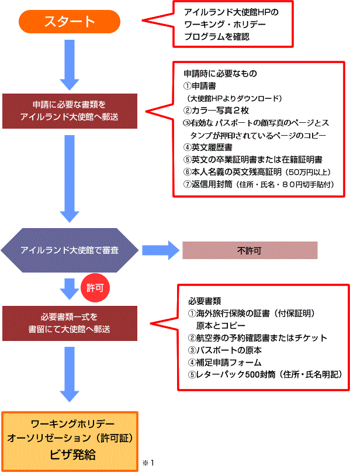

';
$header_obj->fncMenuHead_h1text = 'ワーキングホリデー協定国（アイルランド） | ワーホリビザ情報';
$header_obj->display_header();
include('../calendar_module/mod_event_horizontal.php');
?>
';
$header_obj->fncMenuHead_h1text = 'ワーキングホリデー協定国（アイルランド） | ワーホリビザ情報';
$header_obj->display_header();
include('../calendar_module/mod_event_horizontal.php');
?>
アイルランド国情報へ アイルランドのワーキングホリデービザの取得方法についてご案内します。
ビザ取得までのステップチャート
参加可能年齢 18～25歳
申請時18歳以上25歳以下であること。全日制の学校に在籍していたか、フルタイムで就労していた場合は最大30歳まで引き上げ可能。
※１ 許可証発給
許可証発給日から12ヶ月以内にアイルランドに入国し、初入国日より海外旅行保険でカバーされた期間（最長12ヶ月）滞在可能。
アイルランド大使館
〒102-0083 東京都千代田区麹町2－10－7 アイルランドハウス アイルランド大使館 ワーキング・ホリデープログラム係
外務省ＨＰで基本情報を確認しよう
ビザの申請、ひとりでできますか？
ビザ申請方法
ワーキング・ホリデー・オーソリゼーション（許可証） 申請資格
- 現在日本に居住していること（申請時を含む）
- 一定期間（最長1年）アイルランドで休暇を過ごすことを本来の目的とすること
- 申請書受理時点で、年齢が18歳以上25歳以下であること。全日制の学校に在籍していたか、常勤（フルタイム）で就労していた場合は最大30歳まで引き上げ可能 ※30歳の場合、申請時に30歳であれば、31歳での入国可
- 扶養家族（配偶者を含む）を同伴しないこと｡扶養家族に申請資格がある場合は、それぞれ申請することが可能
- 有効なパスポートと帰国用航空券、または、それを購入できる充分な資金を保持していること
- アイルランド滞在中、宿泊費等を含めて生活に必要な資金を有すること
- 以前「ワーキング・ホリデープログラム」でアイルランドへ渡航した経験がないこと
- 健康かつ、犯罪歴が無いこと
- 医療保険に加入すること
発給人数
400件
申請料
無料
申請時期
【2014年度の申請について】
第一期申請受付期間
＜2014年8月31日以前のご出発を希望される方対象＞
2014年1月1日（水）～1月31日（金）（当日消印有効）
第二期申請受付期間
＜2014年9月1日以降、2015年2月末以前のご出発を希望される方対象＞
2014年6月1日（日）～6月30日（月）（当日消印有効）
＊第二期申請については、申請方法等変更される可能性がございますので
申請前に再度ホームページをご確認いただきますようお願い致します。
アイルランド ワーキング・ホリデー・プログラムは、31歳以上の方の申請はできませんのでご了承ください。
申請方法
申請書類
- 英文の申請書（大使館HPよりダウンロード）
- 写真2枚（6ヶ月以内に撮影したもの）,1枚を申請書に貼付
- 有効なパスポートのすべてのページのコピー(A4サイズ)
※パスポートの有効期間がアイルランド滞在期間＋6ヶ月以上であること 。 - 履歴書(英文)
- 最終学歴校の卒業証明書または成績証明書。現在就学中の方は、在籍証明書でも可(英文)
- 本人名義の英文残高証明書（50万円以上・円建て）の原本
- 住所、氏名、80円切手貼付返信用封筒(定型最大サイズ12x23.5cm)
その他
- 全日制の英語学校へ通学可
- フルタイム就労が可能（1週間39時間迄）
【注意】
ここに記載のある情報は法改正等により予告なく変更することもあります。
また、このページの内容は各国大使館・領事館等より情報を収集し細心の注意を払って作成しておりますが、
正確なものであることを保証するものではありません。
ビザ取得の際は、必ず各国大使館・領事館等の情報をご自身でもご確認ください。
ビザの申請、ひとりでできますか？
display_links(); ?>